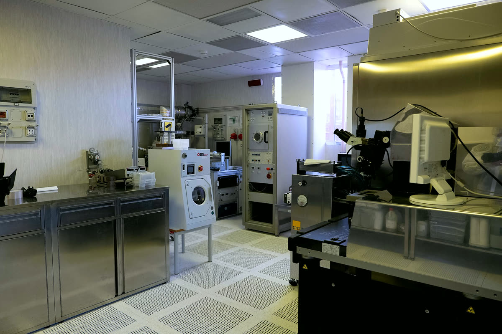

Crystal BOND / Project
The project
BOND, Crystal BOND, is a research project of INFN National Scientific Committee 5, in the accelerator area, from 2025 to 2027. It is coordinated by INFN Ferrara.

Motivation and goals
Bent crystals steer charged particles by channeling and select or focus X-rays by diffraction. How well they do it depends less and less on the lattice and more and more on how the crystal is bent and held. Mechanical holders leave anticlastic curvature and torsion and add mass; glue layers creep and change with temperature.
Each field feels it differently. At accelerators, metal benders make deformation hard to control and weigh on the goniometers. In X-ray spectroscopy, quartz and germanium beat silicon but are glued, and lose their advantage to shape errors. In spectral imaging, bent Laue crystals need motorised benders to correct their shape. Above 100 keV, astronomy still lacks focusing optics.
BOND joins the crystal directly to a substrate figured with optical precision, by anodic and thermo-compression bonding, techniques of silicon micromachining. The crystal takes the shape of the substrate: compact, light assemblies with almost no form error. They have to be adapted from thin wafers to substrates a few centimetres thick and crystals from below a millimetre to a few millimetres.
The goal is to make INFN a reference for crystals that manipulate radiation, with one platform and the know-how to design, make and test them.
Planned assemblies
Four assemblies, each for its own job, from the same bonding platform.
| Assembly | Purpose | Radius | Shape | Miscut | Materials |
|---|---|---|---|---|---|
| A1 | Steering charged particle beams of about 1 TeV | 10 m | rectangular, convex, about 70 × 20 × 3 mm | < 100 µrad | silicon |
| A2.1 | Bonded bent crystal analysers | 0.1–1 m | spherical or cylindrical, concave, Ø ≈ 100 mm | not critical | germanium, quartz, lithium niobate |
| A2.2 | Spectral imaging | 0.1–0.5 m | cylindrical, concave | not critical | silicon, germanium |
| A3 | Concentrator for hard X-rays above 100 keV | 20 m | about 10 convex tiles, 30 × 20 × 2 mm each | uniform within a few µrad | silicon, germanium |
Work packages
Design, two lines of bonded assemblies, verification on beams, and the management that holds them together.
- WP1
Design of crystals and substrates
Sultan Dabagov · LNF
- Crystal design for each application (Fe, LNF, TS)
- FEM-assisted design of the substrates (LNL, Fe)
- Software for imaging simulation and spectral analysis (TS)
- WP2
Crystal assemblies for particle beam steering
Andrea Mazzolari · Ferrara
- Incoming silicon wafers and miscut reduction
- Shaping, bending and bonding
- Characterisation in the lab and with synchrotron light
- Stress tests
- WP3
Crystal assemblies for X-ray concentrators
Davide De Salvador · LNL
- Quality of incoming crystals, uniform miscut for Laue tiles
- Films for thermo-compression bonding and their characterisation
- Shaping, bending and bonding of A2 and A3
- WP4
Verification of bonded crystals for X-ray applications
Fulvia Arfelli · Trieste
- Characterisation with synchrotron light
- Focusing tests of Laue-lens building blocks
- Mechanics and phantoms; spectral imaging with bonded crystals
- WP5
Management and dissemination
Andrea Mazzolari · Ferrara
- Procurement of the bonding equipment
- Workshops and conferences (LNF)
- Risk management, publications, contacts with industry
Milestones and deliverables
Thirty-six months, January 2025 to December 2027. Status as given in the 2025 activity report.
DoneIn progressPlannedToday